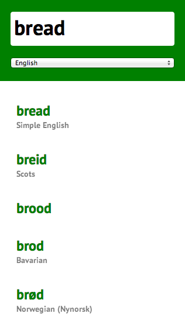

And thanks to Express, turning Ord into a JSON webservice is a one-liner.
Works on mobile too, with a live media-query love.

One last thing: Let's try sort the results by etymological similarity to your query.
There's an npm module for that.
Levenshtein distance between two words is the minimum number of single-character edits (insertions, deletions or substitutions) required to change one word into the other.
We can use it to determine how similar (or different) two words are.
Takeaways
Wikipedia is amazing.
Node makes it easy to build complex projects composed of smaller modules, each with their own set of responsibilities.